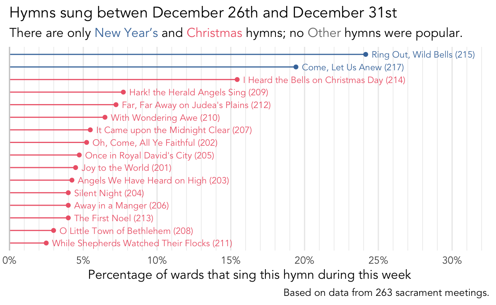
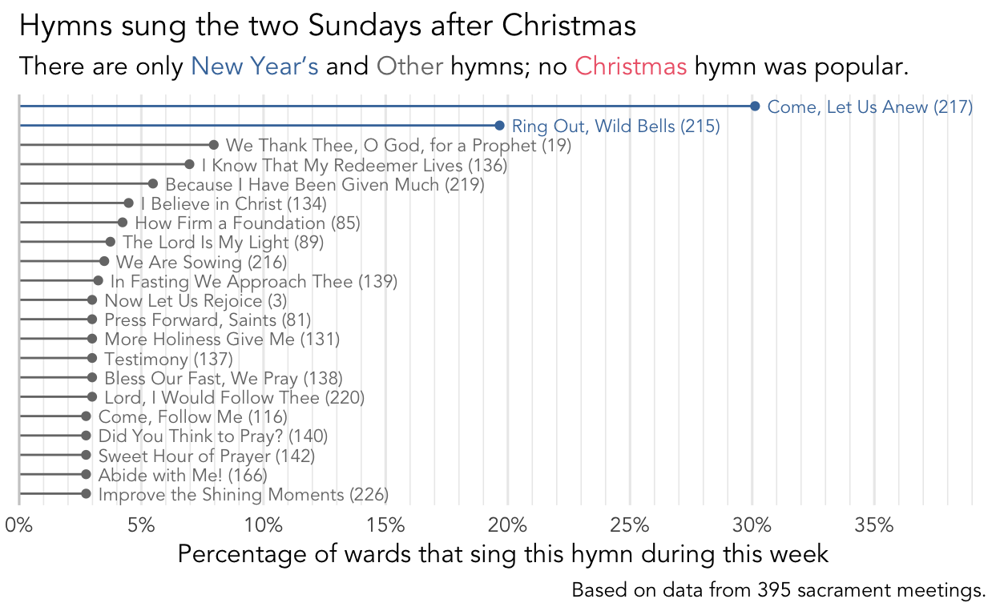
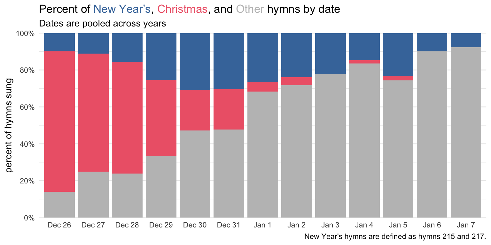
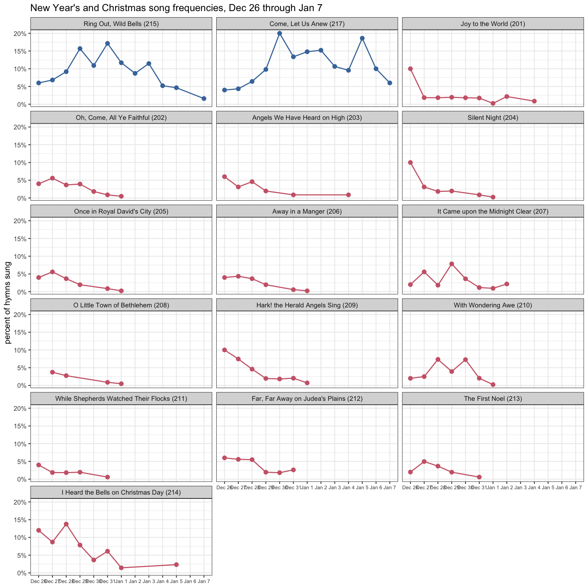
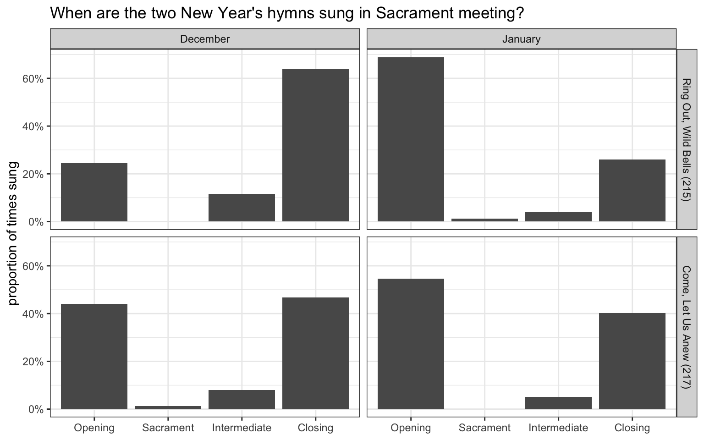

What hymns are sung around New Year’s Day?
holidays
frequency
In this blog post, I explore what hymns are sung the Sunday after Christmas and the first Sunday in January. The structure of this post is very similar to my previous analysis of the Sunday after Thanksgiving. However, the transition from Thanksgiving to Christmas is not the same as from Christmas to New Year’s. In this post, I uncover what I think are some pretty interesting patterns that illuminate a lot about how music coordinators select their hymns.
Note
This post is based on data from 658 sacrament meetings from 250 wards. It covers includes data from late 2003 to late 2023. 34% of the data comes from Utah, 53% comes from elsewhere in the US, and 13% comes from outside the US.
What hymns are sung?
Figure 1 shows the most popular congregational hymns between December 26th and January 7th. I’ve color-coded the hymn names to correspond to the holiday they are most closely associated with. Hymns 201–214 are Christmas hymns and are colored in red. Hymns 215 and 217 are New Year’s hymns and are colored in blue. Everything else is colored in gray.
It’s apparent that it is quite popular to sung New Year’s hymns the Sunday after Christmas. Almost 50% of wards sing
What is interesting is that
But, you might argue that the week after Christmas is a totally different Sunday than the week after New Year’s. And you’d be right! If we break the data down into those two weeks, we get very different pictures! @fig_limbo shows the most popular hymns just in the last week of December. You can see that while the New Year’s hymns are still at the top, all the rest are all Christmas hymns. And if you look closely,

If we now look at the first Sunday in January, we get a totally different picture. Figure 3 shows that once we’re on the January side of New Year’s, no Christmas hymn is popular. We again get the New Year’s hymns, but all the other hymns are just generic popular hymns without much of a theme.

So, while this blog post is intending to cover both of these weeks at the same time, it’s important to separate them out as best I can.
Christmas vs. New Year’s
Let’s dive just a little bit deeper into just the Sunday after Christmas, Table 1 shows the percentage of wards in my sample that sing Christmas and New Year’s hymns the Sunday after Christmas The top right cell shows that 34.6% of wards sing at least one Christmas hymn and no New Year’s hymns. The bottom left cell shows that 28.2% of wards sing at least one New Year’s hymn and no Christmas hymns. It is interesting that these numbers are so similar even, so even though the two blue bars in Figure 2 above were much longer, the many shorter red bars add up to be about the same.
| Christmas hymns | New Year's hymns | |
|---|---|---|
| yes | no | |
| yes | 18.1% | 34.6% |
| no | 28.2% | 19.1% |
Interestingly, the numbers in the other corners of the box are also pretty even. About 18.1% of wards sing both Christmas and New Year’s hymns, while 19.1% of wards sing neither. And if we add up the rows and the columns, they all come close to about 50%. Here’s a (maybe confusing) summary of what’s happening:
The amazing thing is that if you swap Christmas and New Year’s in all those statements, it’s still true!
I find the symmetry in those results very satisfying.
I took a look at the wards that didn’t sing either Christmas or New Year’s hymns the last week of December and I didn’t see too much about what hymns they did sing. There were a few that I could see fitting with the theme of the closing of a year, like
The other pattern, singing both a Christmas hymn and a New Year’s hymn, is just as common as singing neither. Like what we saw for the week after Thanksgiving, there does seem to be a pattern though for when within the meeting these Christmas and New Year’s hymns are sung. Perhaps unsurprisingly, the most common configuration is for the opening hymn to be a Christmas hymn and the closing hymn to be a New Year’s hymn. That happened in 90% of the wards I have data from that sang both hymn types in the same meeting. Of those, the most sang some other hymn as the intermediate hymn, then Christmas, then New Year’s. The other configurations I have attestations of are shown in Table 2 and only showed up once or twice. (Note here that “Other” means any hymn that is not a Christmas or New Year’s hymn.)
| Opening | Sacrament | Intermediate | Closing | number of wards | percent of wards |
|---|---|---|---|---|---|
| Christmas | Other | None/Other | New Year’s | 27 | 51.9% |
| Christmas | Other | Christmas | New Year’s | 15 | 28.8% |
| Christmas | Other | New Year’s | Christmas | 4 | 7.7% |
| Christmas | Other | New Year’s | New Year’s | 3 | 5.8% |
| Christmas | NA | None/Other | New Year’s | 1 | 1.9% |
| New Year’s | Other | Christmas | Christmas | 1 | 1.9% |
| New Year’s | Other | Christmas | New Year’s | 1 | 1.9% |
New Year’s Day
Like what we saw with the Sunday after Thanksgiving, there is an effect that the actual date has on the hymns. Specifically, if that Sunday lands on December 1st, the numnber of Christmas hymns goes up quite a bit. Do we see the same kind of pattern with New Year’s Day?
Probably unsurprisingly, yes! Figure 4 shows the breakdown of Christmas, New Year’s and other hymns from December 26th through January 7th.

I think this is a largely unsurprising pattern. First, we see that the number of Christmas hymns decreases the further you get from Christmas. In secular American Christmas culture, it seems like the Christmas season ends sometime between Christmas and New Year’s. However, in some Christian traditions, they do honor the fact that the “twelve days of Christmas” starts on Christmas day, meaning it extends until January 5th, with various celebrations happening after that, like Epiphany on the 6th. In my experience (keeping mind that I’m not an expert in Mormon culture), the end of the Christmas season for Latter-day Saints is in-line with mainstream American culture and happens pretty soon after the 25th. This plot shows pretty strong evidence for that: there was no indication of Christmas hymns being sung during the last three days of Christmas.
The second pattern we see is the rise and fall of the popularity of New Year’s hymns. The closer you are to New Year’s Eve—and yes, it appears to peak on New Year’s Eve—the more likely you are to sing New Year’s hymns.
Finally, all the other hymns gradually become more common as you progress from December 26th to January 7th. It’s actually quite a straight line, so there doesn’t appear to be a jump at any one point.
So, when looking at the transition from Thanksgiving to Christmas, there was an abrupt pivot point at December 1st. In this case, there is no such abrupt change. Instead, we gradually transition away from Christmas, into New Year’s, and away from both over the course of two weeks. I think this is quite a cool pattern to see because, as far as I’m aware, this is almost entirely unconscious. I don’t think any music coordinator looks at their notes from previous years and thinks, “well, this year, we’re one day further to New Year’s than we were last year, so I’ll lower the odds of choosing a New Year’s hymn by 5%.” But, when aggregating many wards over many years, the pattern is pretty tidy.
I should mention that seeing the trend shown in Figure 4 is only possible because I have data spanning over 20 years. Since the the Sundays around New Year’s Day fall on different dates, I can compare those days to each other. So, for example, in 2024, New Year’s Day will be on a Monday, so Sunday will be New Year’s Eve. This was also true in 2007 and 2018, so that column represents those three years pooled together. I think this is important to mention because no matter how much data is collected from one year, you’ll still only see just one of these columns. It takes a lot of data over many years to be able to see this kind of nuance.
To dig just a little deeper, I wanted to see the trends for specific hymns across these dates. In Figure 5 (sorry for the small text), each of the 14 Christmas hymns and two New Year’s Hymns is in their own panel. Lines and dots are higher if that hymn is sung more often on that day.

Among the New Year’s hymns, we again see that
A \(\chi^2\) test suggests that this difference—that Ring Out, Wild Bells (#215) is more common before New Year’s and Come, Let Us Anew (#217) is more common after—is statistically significant (\(\chi^2\) = 8.78, df = 1, p = 0.002). This may be another case where the order that they appear in the hymnal influences when they’re sung.
Finally, just to dig a even deeper, Figure 6 shows when the two New Year’s hymns are sung within Sacrament meeting. Because intermediate hymns are not common, it’s no surprise that their bars are smaller. And it’s highly unusual to sing these as sacrament hymns, but apparently it has been done.

I’ve split the data up by month because I thought there might be a difference, and it turns out I was right.
Once again, a \(\chi^2\) test suggests that this difference in when Ring Out, Wild Bells (#215) is sung in the meeting is statistically significant (\(\chi^2\) = 29.56, df = 1, p < 0.001).
Conclusion
Christmas hymns are less common the further you are from Christmas. New Year’s hymns are common the closer you are to New Year’s. Specifically,